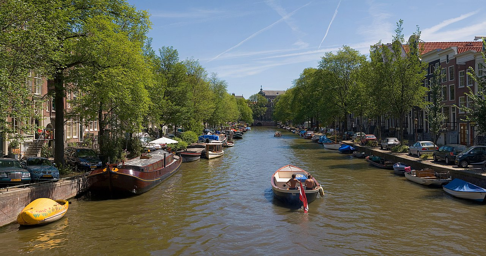

Cześć! Nazywam się Artur Strąg. Mam 29 lat. Urodziłem się w Warszawie i obecnie mieszkam w tym mieście. Ukończyłem studia na kierunku fizyka. Z zawodu pracuję jako nauczyciel fizyki. Chciałbym nauczyć się frontendu oraz programować dla samorozwoju.
Poniżej przedstawiam tylko niektóre albumy muzyki, której słucham. Niestety nie jestem w stanie umieścić tutaj wszystkich płyt, bo jest tego bardzo duuuużo.
| Album | Wykonawca | Rok |
|---|---|---|
| Mr. Morale & the Big Steppers | Kendrick Lamar | 2022 |
| And In The Darkness Hearts Aglow | Weyes Blood | 2022 |
| Norman Fucking Rockwell | Lana Del Rey | 2019 |
| Preachers Daughter | Ethel Cain | 2022 |
Moim największym zainteresowaniem jest muzyka. Uwielbiam słuchać muzyki. Nie wyobrażam sobie życia bez niej. Chciałbym nauczyć się grać na fortepianie, by móc tworzyć własne kompozycje. Również interesuję się podróżami. Bardzo lubię podróżować w góry. Moim największym marzeniem jest odwiedzenie Japonii, a także całej Skandynawii. W wolnych chwilach lubię też czytać dobre książki, pójść do teatru czy na wystawę. Poniżej zamieszczam zdjęcie miasta Amsterdam, w którym niedawno byłem.
